Soo my brother gave me on old gaming mouse ... and me being me i wanted to figure it out and disassemble it. Because its a rather interesting construction. Most mice these days are very cheaply built and not at all durable. But this one is different. Sadly i broke a component during disassembly. It was made from plastic.
For disassembly i used a guide. RAT 7 Disassembling Guide - YouTube
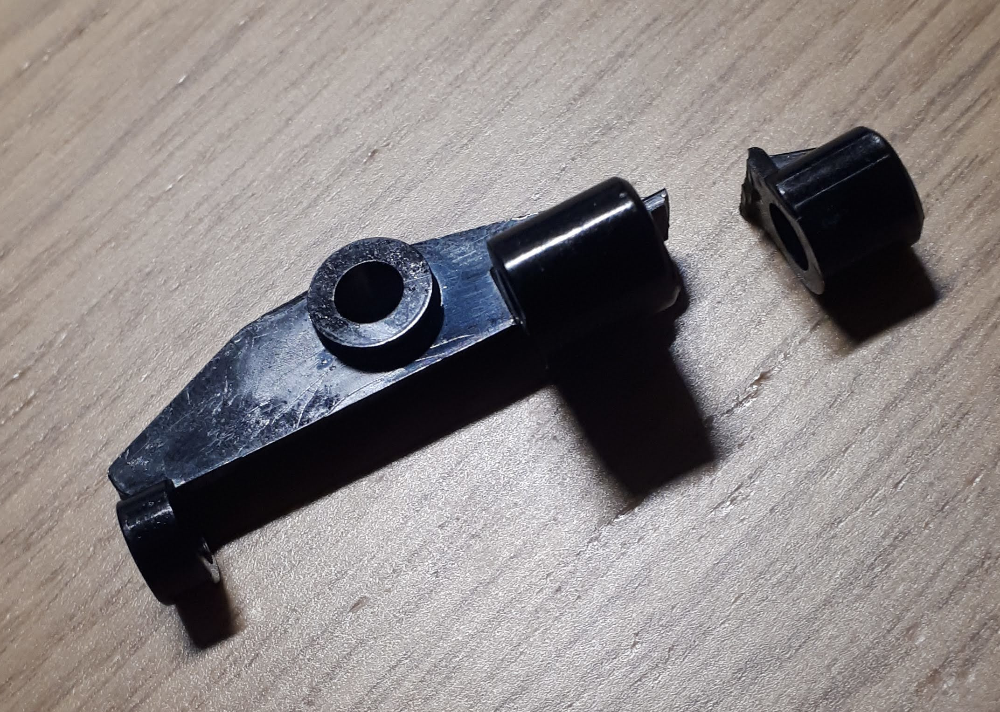So you know what comes next ... i have to fix it. Blueprint time.
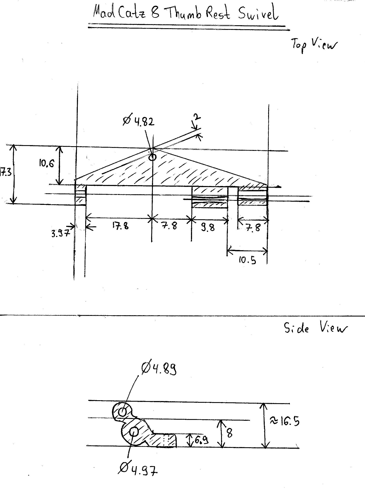This is going to be one of the most difficult parts i have made so far. We are starting with a block of Aluminium to get the holes straight.
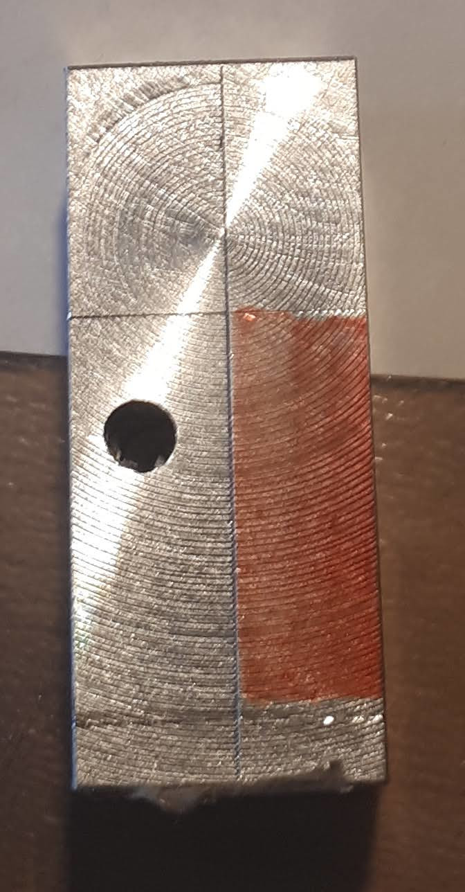Lets mount it in the Lathe to get some big chunks milled out of it.
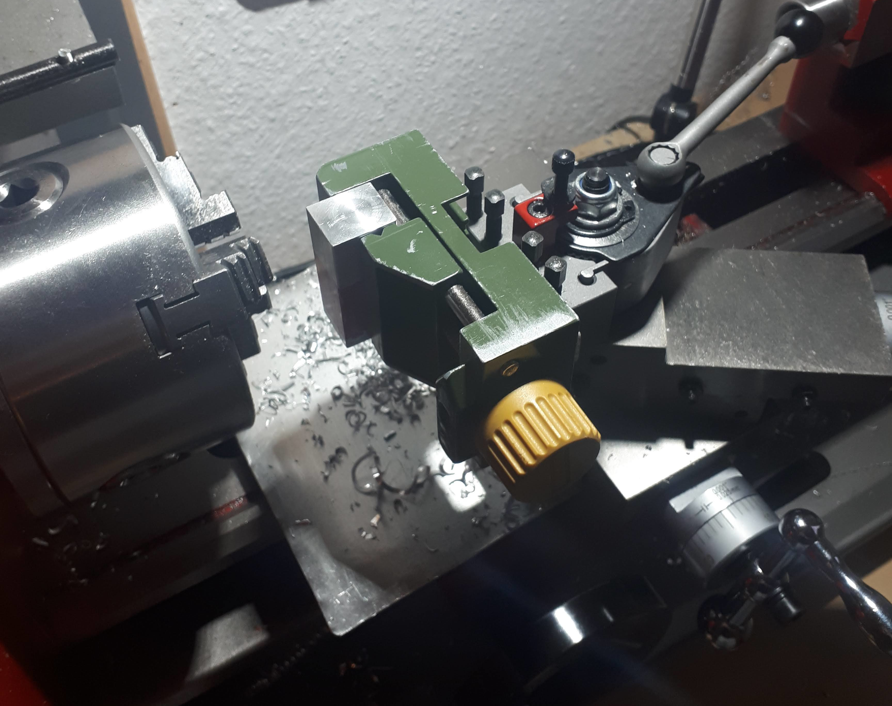Result of the first milling.
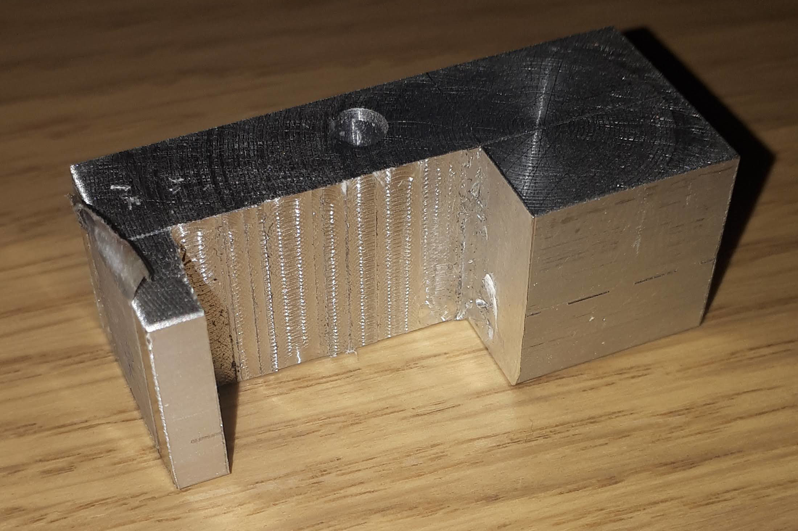After a lot of setups, Milling and Drilling on the Lathe, we achieve this.
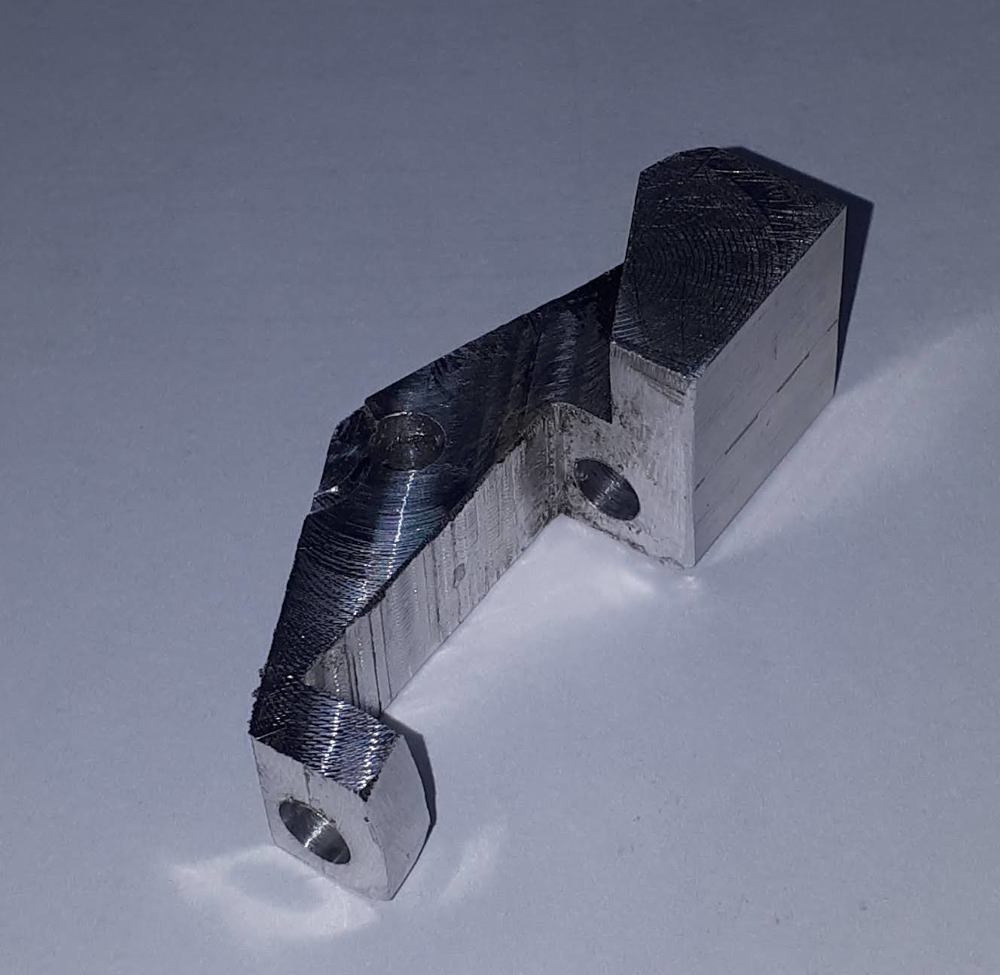Now we have to use some files and a vise to achieve some of the more intricate curves.
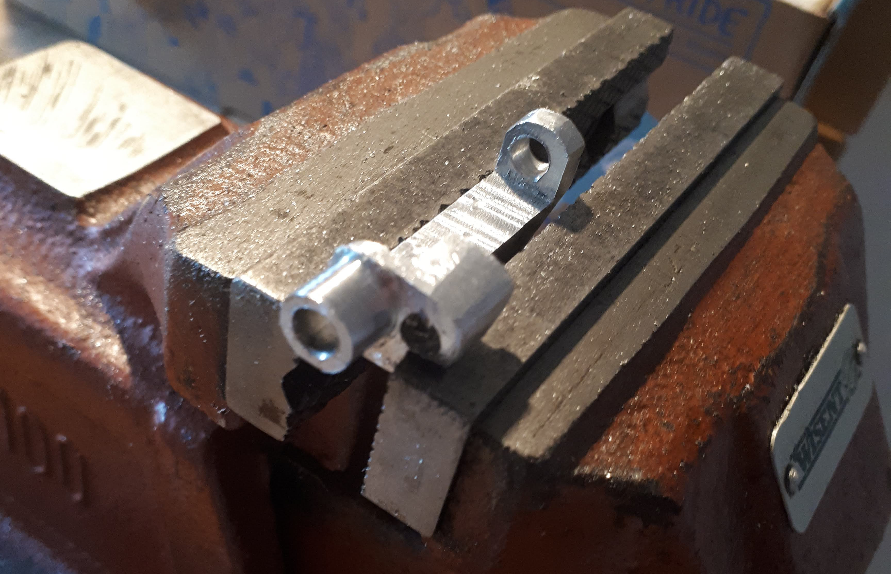Now we can proceed to assembling the parts. One screw is for the adjustment of the distance of the thumb rest, the other one is for the alignment of the thumb rest.
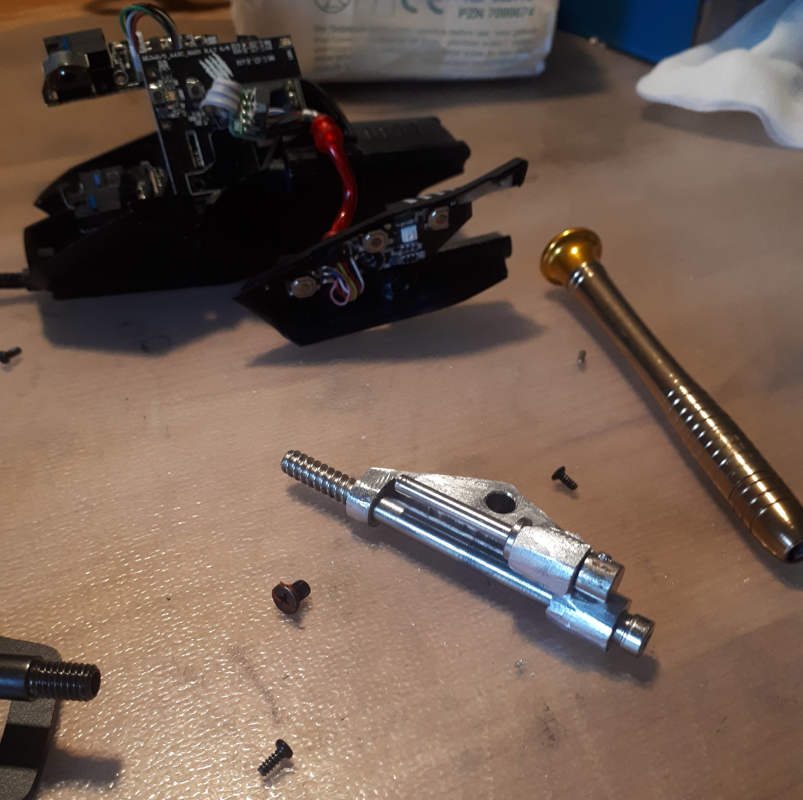The diameter of the hole connecting it to the bottom plate is really important for a snug sliding fit.
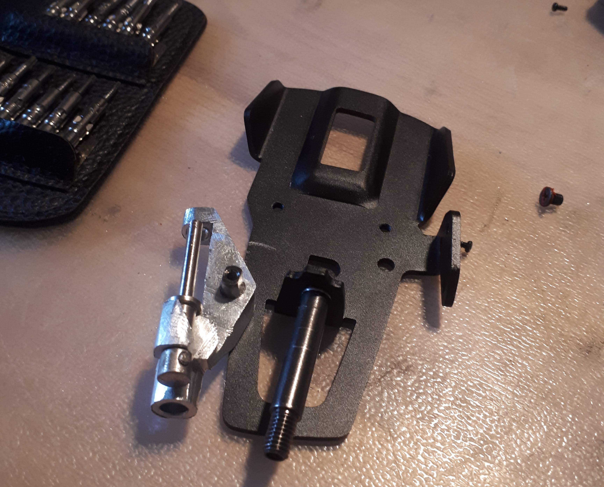Now we fit the plastic case.
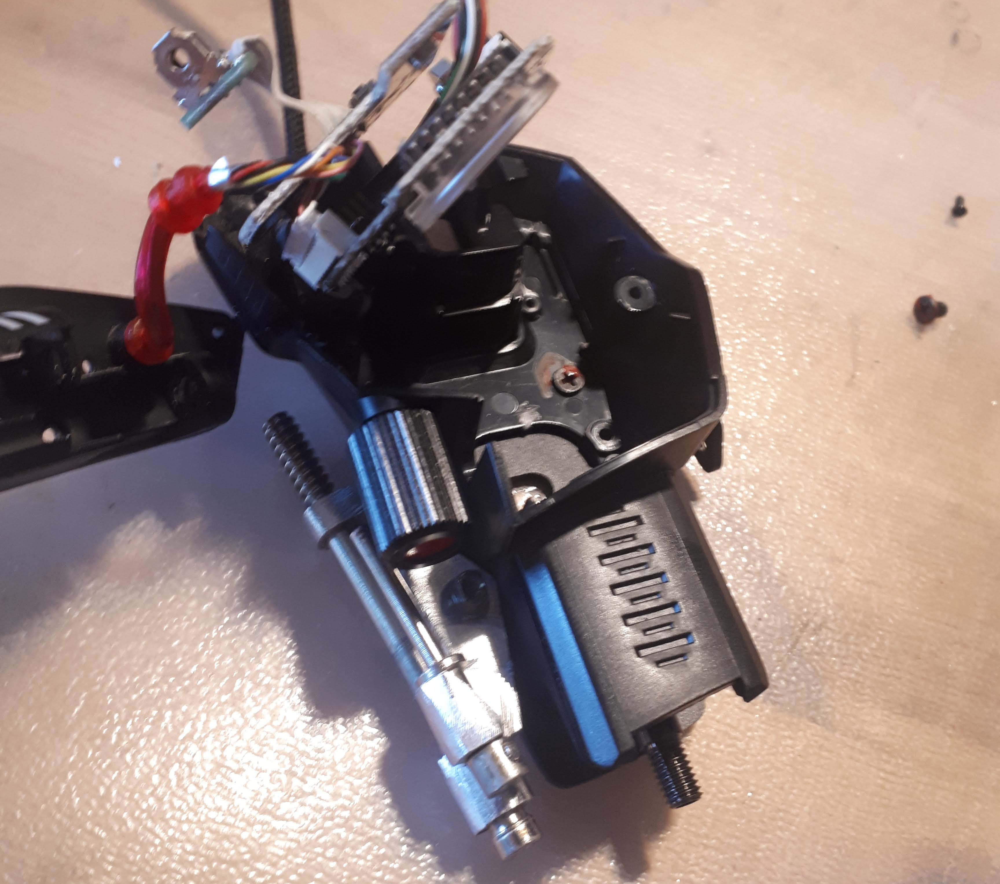Mounting the thumb rest backplate.
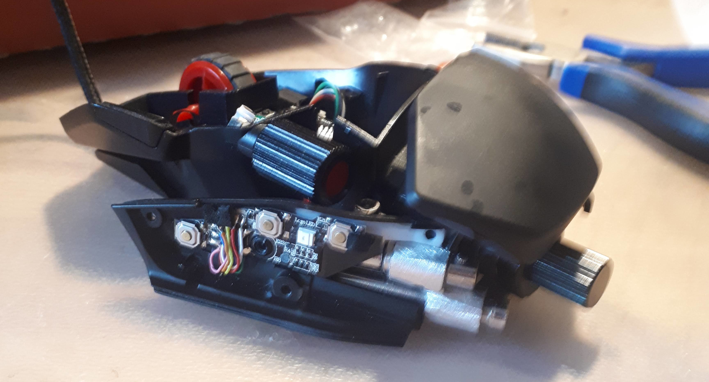View from the bottom
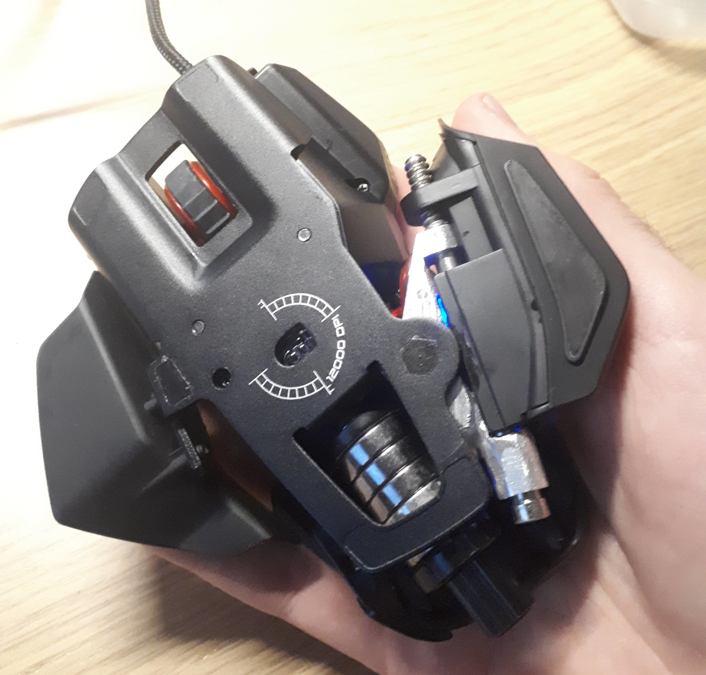The finished part is actually a bit out of spec, causing the thumb rest to be tilted slightly upwards. Still usable though. Learned a lot from this part.
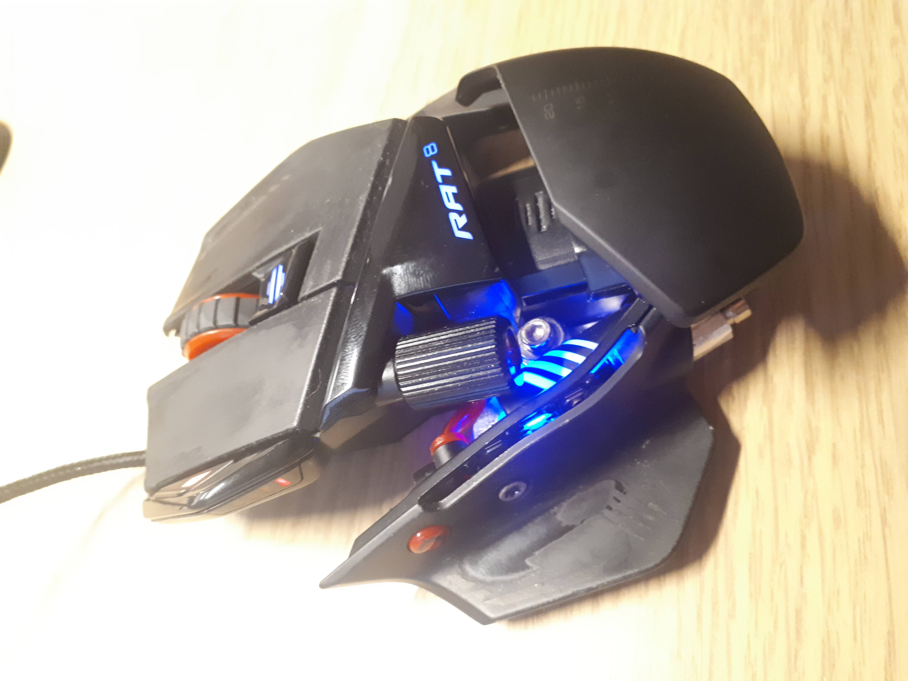